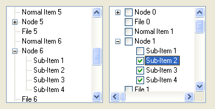

TreeGadget()
Syntax
Result = TreeGadget(#Gadget, x, y, Width, Height [, Flags])Description
Creates a Tree gadget in the current GadgetList.
Parameters
#Gadget A number to identify the new gadget. #PB_Any can be used to auto-generate this number. x, y, Width, Height The position and dimensions of the new gadget. Flags (optional) Flags to modify the gadget behavior. It can be a combination of the following values: #PB_Tree_AlwaysShowSelection : Even if the gadget isn't activated, the selection is still visible. #PB_Tree_NoLines : Hide the little lines between each nodes. #PB_Tree_NoButtons : Hide the '+' node buttons. #PB_Tree_CheckBoxes : Add a checkbox before each item. #PB_Tree_ThreeState : The checkboxes can have an "in between" state.The #PB_Tree_ThreeState flag can be used in combination with the #PB_Tree_CheckBoxes flag to get checkboxes that can have an "on", "off" and "in between" state. The user can only select the "on" or "off" states. The "in between" state can be set programmatically using the SetGadgetItemState() function.
Return value
Returns nonzero on success and zero on failure. If #PB_Any was used as the #Gadget parameter then the return-value is the auto-generated gadget number on success.
Remarks
Each item in the tree has a sublevel value assigned to it, that determines its relation with the item above and below it. Items with the same sublevel belong to the same node, items with a higher sublevel are child-items and so on. This sublevel value can be used to determine the relation between two items by comparing their sublevel values. The 'Flags' parameter of AddGadgetItem() is always required for TreeGadget items and is used to set the sublevel at which the new item should be added. Note that if the function is called with a sublevel at which the item cannot be added, the item will be added at the sublevel where it is possible to add it.
A 'mini help' can be added to this gadget using GadgetToolTip().
The following functions can be used to act on the tree content:
- AddGadgetItem(): Add an item (with an optional picture in the standard 16x16 icon size).
- RemoveGadgetItem(): Remove an item (and all its child-items).
- ClearGadgetItems(): Remove all the items.
- CountGadgetItems(): Return the number of items currently in the #Gadget.
- GetGadgetItemState(): Return the current state of the specified item.
- SetGadgetItemState(): Change the current state of the specified item.
- GetGadgetItemText(): Return the current text of the specified item.
- SetGadgetItemText(): Change the current text of the specified item.
- SetGadgetItemImage(): Change the current image of the specified item.
- GetGadgetItemData(): Returns the value that was stored with item.
- SetGadgetItemData(): Stores a value with the item.
- GetGadgetItemColor(): Returns front or backcolor of the item.
- SetGadgetItemColor(): Changes front or backcolor of the item. (not supported on MacOS X)
- GetGadgetState(): Return the current selected item.
- SetGadgetState(): Change the currently selected item.
- GetGadgetText(): Return the text of the currently selected item.
- SetGadgetText(): Change the text of the currently selected item.
- GetGadgetItemAttribute(): With the following attribute:#PB_Tree_SubLevel: Returns the sublevel value of the given item.- GadgetItemID(): Return the OS handle of the specified item (useful for API functions).
This gadget supports the SetGadgetColor() and GetGadgetColor() functions with the following values as 'ColorType':#PB_Gadget_FrontColor: Textcolor #PB_Gadget_BackColor : BackgroundcolorThe following events are supported through EventType():#PB_EventType_LeftClick: left click on an item, or a checkbox was checked/unchecked #PB_EventType_LeftDoubleClick #PB_EventType_RightClick #PB_EventType_RightDoubleClick #PB_EventType_Change: the current item changed #PB_EventType_DragStart: the user tried to start a Drag & Drop operation.After a #PB_EventType_DragStart event, the Drag & Drop library can be used to start a Drag & Drop operation.
Example
If OpenWindow(0, 0, 0, 355, 180, "TreeGadget", #PB_Window_SystemMenu | #PB_Window_ScreenCentered) TreeGadget(0, 10, 10, 160, 160) ; TreeGadget standard TreeGadget(1, 180, 10, 160, 160, #PB_Tree_CheckBoxes | #PB_Tree_NoLines) ; TreeGadget with Checkboxes + NoLines For ID = 0 To 1 For a = 0 To 10 AddGadgetItem (ID, -1, "Normal Item "+Str(a), 0, 0) ; if you want to add an image, use AddGadgetItem (ID, -1, "Node "+Str(a), 0, 0) ; ImageID(x) as 4th parameter AddGadgetItem(ID, -1, "Sub-Item 1", 0, 1) ; These are on the 1st sublevel AddGadgetItem(ID, -1, "Sub-Item 2", 0, 1) AddGadgetItem(ID, -1, "Sub-Item 3", 0, 1) AddGadgetItem(ID, -1, "Sub-Item 4", 0, 1) AddGadgetItem (ID, -1, "File "+Str(a), 0, 0) ; sublevel 0 again Next Next Repeat : Until WaitWindowEvent() = #PB_Event_CloseWindow EndIf

See Also
AddGadgetItem(), RemoveGadgetItem(), ClearGadgetItems(), CountGadgetItems(), GetGadgetItemState(), SetGadgetItemState(), GetGadgetItemText(), SetGadgetItemText(), SetGadgetItemImage(), GetGadgetItemData(), SetGadgetItemData(), GetGadgetState(), SetGadgetState(), GetGadgetText(), SetGadgetText(), GetGadgetItemAttribute(), GadgetItemID(), GetGadgetColor(), SetGadgetColor(), ExplorerTreeGadget()
Supported OS
All